Obres seleccionades
| 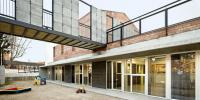 |
Escola Bressol We were asked to build a kindergarten adapting the ground floor of an old farmhouse. On the first floor a multi-purpose hall was also required with a separate entrance. The terraced nature of the plot dictates the use of a double ramp descent to enter the school, whilst also allowing... |
| 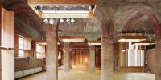 |
Centre d'Art Cal Massó (PROPOSTES/QUÈ?)
|
| 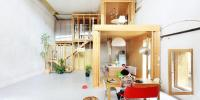 |
Cine Lídia How to live in this old cinema feeling well (to get a good sunlight dose, not to get cold in winter, to rest...) spending the minimum money (during the construction process and after that)? |
 |
Capsa habitable Example of reusing heritage. This project consists of making a reversible intervention which dignifies and updates an obsolete building due to the lack of self-sufficient society based on agriculture in the Pirenees. Instead of deleting the past and the cultural heritage, a light wooden box... |
| 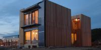 |
Casa passiva Arboretum L’edifici és un habitatge entre mitgeres, que vol reduir el consum de recursos naturals. Minimitza el consum d’energia per al confort climàtic amb un bon aïllament i una disposició de les obertures amb un pati interior que maximitza la captació solar passiva durant l’hivern i proteccions... |
| 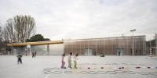 |
Gimnàs 704 The city council of Barberà del Vallès commissioned us the design of a gymnasium with locker rooms and an outdoor track for the children's education centre called “El Bosc" which is located in an industrial estate. We started from the following assumptions: |
| 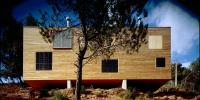 |
House 205 The setting of the project is a plot with steep slopes and a great amount of trees and bushes. The aim is building a house without causing any serious impacts on the land. The house will be built on a natural rocky platform. This platform will also be used as either the exit or the garden of the... |
| 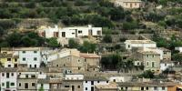 |
House at Bunyola Finding himself in a place where popular expertise alone knows how to build sends the architect back to school, but this time to a good one. The fact that only a beast of burden or a man on foot might reach the site has never been an obstacle; the construction was awaiting what was simple, both... |
| 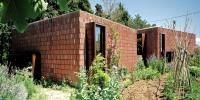 |
Estudi del pintor Damià Jaume The project was born from the decision of making a cistern in order to collect the water coming from the roof. That circumstance was used as an excuse to build the new workshop. Oposed to the existing studio, which has vistas to Mallorca’s fields, the new one looks to the nearest ground. It... |
| 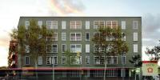 |
Dwellings at Barcelona Our approach to the project was to work from inside out, carefully considering the spatial qualities and adjacencies of the interior spaces. Thick boundaries between interior and exterior act as small-scale buffers or ‘almost-rooms’, providing the dwelling with a richer variety of spaces of... |
| 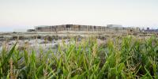 |
Hotel Aire Situat a un camp de blat situat per un paisatge àrid amb collita de regadiu, exposat a forts i constants vents, l’hotel es va concebre com a seqüència d’interiors protegits des dels quals poder contemplar l’exterior. |
| 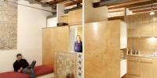 |
Reforma habitatge Passatge Batlló Van trobar un pis petit a la planta primera d’un passatge tranquil. Un interior plè de subdivisions, un gran pati, i rastres evidents de 100 anys d’ocupació. |
| 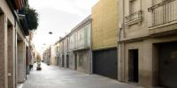 |
Casa Sant Feliu Terraced house with two levels and attic, 4.27m width and a depth of 21.40m. Since its main façade is facing south and the back terrace is facing north, the house is organized grouping day-time zones in the first floor and creating a courtyard for ventilation. This allows the living room to... |
| 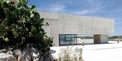 | Museu es Molinar |
| 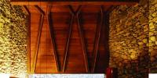 |
Restaurant can Jeroni The reform of Can Jeroni has been done from the point of view of a process that is marked by the different phases which are necessary in a business in constant change. Firstly, a new room is arranged next to the main existing dining-room of the restaurant. This new room is carved into the... |
| 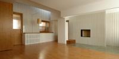 |
El pis d'en Quim This reform affects the southern space between the two supporting walls of a house after its main façade, which looks into a garden, was turned into a party-wall. It was therefore necessary to improve the distribution of the spaces and the entrance of natural light. This new distribution... |
| 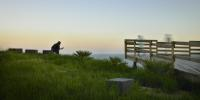 |
Parc del turò del sastre Una de las estratègies importants del projecte és garantir l’accessibilitat a tots els punts del parc, fins i tot, possibilitar l’accés al punt més alt del turó. |
| 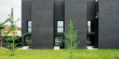 |
Cases Pati El projecte per a 13 habitatges pati en filera a Celrà pretén buscar alternatives a les tipologies que conformen l’actualment mal anomenada “ciutat - jardí”: barris dominats |
| 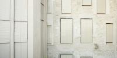 |
Casa Collage Casa Collage al Call de Girona Rehabilitar implica sempre establir una determinada relació amb el passat, amb els passats que s’acumulen a l’espai de la intervenció. I també amb el futur, aquella idea imaginada de lloc cap a la que voldríem tendir. Però implica, sobretot, una gran... |
| 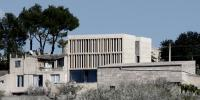 |
Can Joan Jaume i n'Apolonia Quan un passeja per aquest barri se’n adona de la opacitat que presenten les cases aquí construïdes. Són construccions muràries, pètrees, dures, opaques, tancades al carrer. Murs rugosos, esquitxats d’obertures minúscules. Murs quasibé infranquejables. D’aquesta primera lectura se’n desprèn la... |